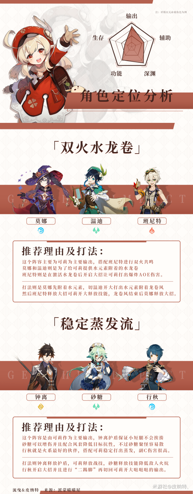

【V1.6攻略】#角色攻略# 哒哒哒~可莉入门级培养攻略
哒哒哒~让我看看谁现在还没有可莉“啊？我也没有啊，那没事了”。 1.6版本更新， 作为第二个UP角色“火花骑士-可莉”终于复刻了！！ 上一次不少玩家都错过了，没有拥有可莉的小伙伴们可不要再错过了！！

可莉小技巧
可莉普攻以及重击被视为“重攻击”对于敌人的韧性有着很大的摧毁能力，可莉的重击可以击倒很多大型敌人，如“岩/冰盔丘丘人、中型丘丘人、愚人众”。
在有钟离的情况下可以A跳来取消后摇，可以大一些小怪或者是站桩BOSS，没太大的实战效果就是好玩。
重击跳取消后摇也是可莉玩家需要基本掌握的操作，在重击火花在头顶出现的瞬间按下方向键和空格，可以取消重击带来的硬直后摇。
圣遗物选择
魔女套不需要考虑，就算叠不满四件套的效果，那优先级也是无限大的，有火元素反应的增伤，两件套也自带15%火元素伤害加成，搭配可莉自身突破的火炕很轻松就可以100%+的火元素伤害加成。
流浪大地套我个人觉得不太好，因为我对可莉的操作手感有着很难受的评价，主要还是腿短，并且可莉的元素反应太频繁，精通的性价比不是太高不如魔女套。
副词条就沙漏需要考虑一下，如果是搭配行秋可以适当的带一下精通沙漏，但带四风和日月的话攻击力就会很低，所以尽量还是带攻击力。